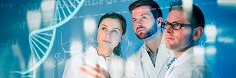
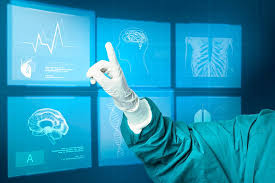
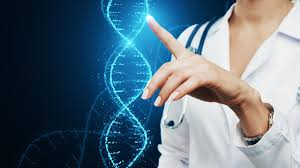
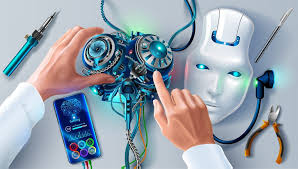
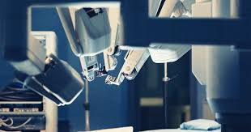
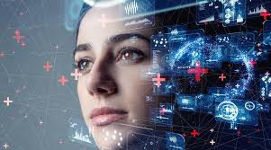
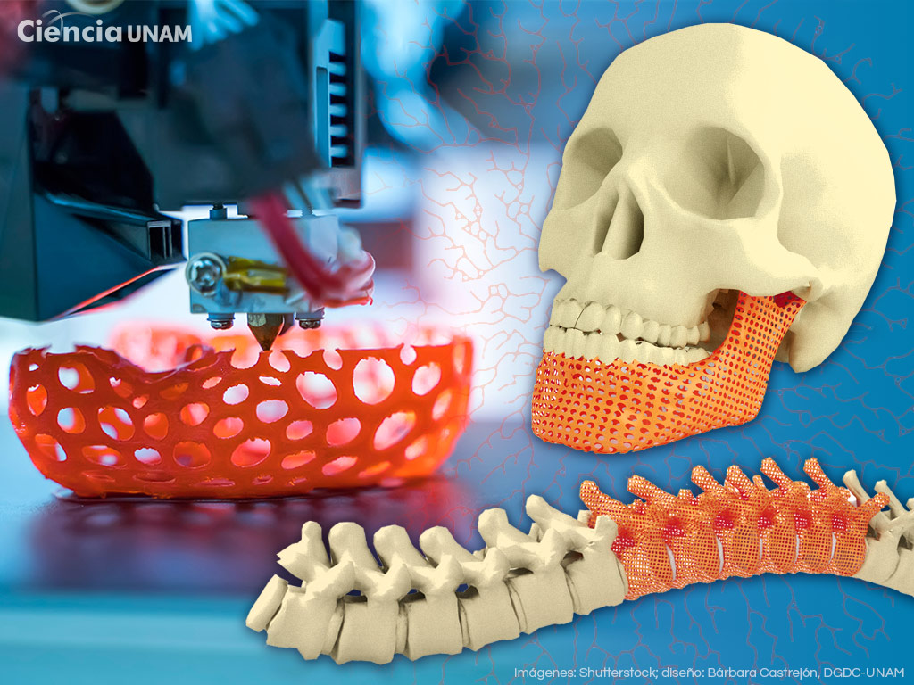

La ciencia y la innovación tecnológica en medicina |
||||||||||||||||||||||||||||||||||||||||||||||||
Introducción
Entre 2024 y 2026, la ciencia y la innovación tecnológica están transformando la medicina a una velocidad sin precedentes.  1. Inteligencia Artificial (IA) para diagnósticos más rápidos y precisosLa inteligencia artificial ya no es solo un concepto futurista: está siendo usada en hospitales y centros de investigación para mejorar la precisión diagnóstica de enfermedades complejas.
La inteligencia artificial (IA) ha dejado de ser una promesa tecnológica para convertirse en una herramienta clínica real que está transformando la práctica médica diaria. En hospitales y centros de investigación de todo el mundo, los sistemas basados en aprendizaje automático y redes neuronales profundas están mejorando la precisión diagnóstica, optimizando procesos asistenciales y facilitando una medicina cada vez más personalizada. Uno de los campos donde la IA ha demostrado mayor impacto es el diagnóstico por imagen. Algoritmos entrenados con miles de estudios radiológicos pueden detectar patrones sutiles que a veces escapan al ojo humano. En el caso del cáncer de pulmón, por ejemplo, sistemas validados en entornos clínicos han mostrado una alta sensibilidad para identificar nódulos pulmonares en tomografías computarizadas, ayudando a los radiólogos a reducir falsos negativos y a priorizar casos sospechosos. Más allá de la radiología, la IA también se aplica en anatomía patológica, dermatología y oftalmología, donde algoritmos analizan imágenes microscópicas o fotografías clínicas para detectar signos tempranos de enfermedad. Otro ámbito clave es el análisis de datos clínicos masivos. Los sistemas de IA pueden procesar historias clínicas electrónicas, resultados de laboratorio, constantes vitales y perfiles genéticos para identificar riesgos y predecir la evolución de enfermedades complejas. La medicina personalizada es otro de los grandes avances impulsados por la IA. A partir del análisis de biomarcadores y secuencias genéticas, los algoritmos pueden sugerir tratamientos dirigidos, especialmente en oncología, donde la caracterización molecular del tumor permite seleccionar terapias más eficaces y menos tóxicas. En España, la adopción de estas tecnologías es ya una realidad en varios hospitales públicos y privados. Se han incorporado herramientas basadas en IA para optimizar flujos asistenciales, analizar datos clínicos y mejorar la toma de decisiones médicas. No obstante, la integración de la IA en la práctica sanitaria también plantea desafíos como la protección de datos, la calidad de la información utilizada para entrenar algoritmos y la transparencia en la toma de decisiones automatizadas. En definitiva, la inteligencia artificial no sustituye al profesional sanitario, sino que actúa como una herramienta de apoyo que amplifica su capacidad diagnóstica y analítica. Ejemplos y evidencia:
2. Medicina personalizada y tratamientos a medida
La medicina personalizada transforma la atención médica: en lugar de tratar a todos los pacientes con el mismo protocolo, se diseñan tratamientos basados en genética, ambiente y estilo de vida del individuo. En lugar de aplicar protocolos estandarizados para todos los pacientes con un mismo diagnóstico, este enfoque adapta la prevención, el diagnóstico y el tratamiento a las características biológicas, ambientales y de estilo de vida de cada persona. Se trata de pasar de una medicina “promedio” a una medicina de precisión. Uno de los pilares fundamentales es el análisis del genoma. Gracias a la secuenciación genética, es posible identificar variaciones en el ADN que influyen en la forma en que cada individuo metaboliza los medicamentos. Esta disciplina, conocida como farmacogenómica, permite anticipar qué fármacos serán más eficaces y cuáles podrían provocar efectos adversos. Por ejemplo, en oncología, ciertas mutaciones determinan si un tumor responderá a terapias dirigidas específicas, lo que reduce la exposición innecesaria a tratamientos poco efectivos y disminuye efectos secundarios. En el caso del cáncer de pulmón, los avances han sido especialmente relevantes. Estudios clínicos y compañías biotecnológicas han desarrollado paneles de análisis que estudian decenas de genes para identificar mutaciones accionables. Organizaciones como Foundation Medicine han impulsado pruebas de perfil genómico integral que ayudan a los oncólogos a seleccionar terapias dirigidas en función de las alteraciones específicas del tumor. Otro avance clave es el desarrollo de pruebas no invasivas, como las biopsias líquidas. Estas pruebas analizan fragmentos de ADN tumoral en sangre para detectar mutaciones relevantes sin necesidad de realizar una biopsia tradicional. Este enfoque evita procedimientos invasivos y permite monitorear la evolución del tumor en tiempo real. Más allá de la genética, la medicina personalizada también incorpora datos sobre el entorno, los hábitos de vida y factores clínicos individuales. La integración de esta información permite diseñar estrategias preventivas más precisas. Sin embargo, este modelo plantea retos importantes como el acceso equitativo, la protección de datos y la necesidad de formación médica especializada. En conjunto, la medicina personalizada mejora la precisión terapéutica y coloca al paciente en el centro de la atención médica. Ejemplos concretos
3. Telemedicina y monitoreo remoto de pacientes
 Atención médica a distancia mediante tecnología digital El uso de la tecnología digital ha cambiado la forma en que se presta atención médica. La telemedicina, combinada con inteligencia artificial y dispositivos móviles, permite consultas médicas a distancia, seguimiento de tratamientos y monitoreo de pacientes crónicos desde casa. La telemedicina se ha consolidado como una herramienta estratégica para optimizar el seguimiento clínico y mejorar la continuidad asistencial, especialmente en pacientes crónicos o en poblaciones con dificultades de acceso a especialistas. A través de plataformas digitales seguras, los pacientes pueden realizar videollamadas con profesionales sanitarios, enviar resultados de pruebas o recibir indicaciones sin necesidad de acudir físicamente a un centro de salud. Esto reduce tiempos de espera, costos de traslado y facilita la atención en zonas rurales. En paralelo, la mHealth (salud móvil) ha ampliado las posibilidades de monitoreo continuo. Mediante smartphones, aplicaciones y dispositivos wearables como relojes inteligentes, se pueden registrar datos como frecuencia cardíaca, glucosa, presión arterial y actividad física. La integración de inteligencia artificial permite analizar estos datos, detectar patrones de riesgo y generar alertas tempranas, mejorando la atención y previniendo complicaciones. Además, estas tecnologías ayudan a mejorar la adherencia a tratamientos mediante recordatorios, seguimiento de síntomas y educación personalizada para el paciente. Sin embargo, también existen desafíos como la protección de datos, la interoperabilidad entre sistemas y la brecha digital en algunos sectores de la población. En conjunto, la telemedicina no sustituye la atención presencial, sino que la complementa, creando un sistema de salud más accesible, continuo y centrado en el paciente. Datos importantes:
4. Avances en terapias genéticas, vacunas y nanomedicina
 Nuevas tecnologías que transforman el tratamiento de enfermedades Las terapias genéticas y las nuevas tecnologías como nanomedicina y vacunas avanzadas están cambiando la prevención y tratamiento de enfermedades que antes eran incurables o muy difíciles de tratar. Los avances en terapias genéticas, vacunas de nueva generación y nanomedicina están redefiniendo los límites de la medicina moderna. Gracias a la biotecnología y a la ingeniería molecular, hoy es posible intervenir directamente en los mecanismos biológicos que originan muchas enfermedades. Uno de los desarrollos más importantes es la terapia génica, que permite introducir o modificar material genético dentro de las células del paciente para corregir enfermedades. Este enfoque puede ofrecer soluciones potencialmente curativas. La nanomedicina permite diseñar sistemas de liberación de fármacos a nivel microscópico, llevando medicamentos directamente a tejidos específicos, aumentando su eficacia y reduciendo efectos secundarios. Este avance ha sido clave en el desarrollo de vacunas basadas en ARNm, que permiten una respuesta rápida y específica frente a enfermedades, además de abrir la puerta a nuevas terapias contra el cáncer. En oncología, se están desarrollando vacunas personalizadas que ayudan al sistema inmunológico a reconocer y atacar células tumorales específicas de cada paciente. También existen investigaciones sobre nanopartículas inteligentes que liberan medicamentos solo en ciertas condiciones, mejorando la precisión del tratamiento. Sin embargo, estos avances enfrentan retos como su alto costo, la regulación y la necesidad de garantizar acceso equitativo. En conjunto, estas tecnologías representan una nueva era en la medicina, con tratamientos más precisos, personalizados y potencialmente curativos. Ejemplos con respaldo científico:
5. Dispositivos inteligentes y tecnología avanzada de monitoreo
 Tecnología que permite vigilar la salud en tiempo real Dispositivos inteligentes —desde wearables (relojes, parches, sensores) hasta tecnologías de biosensores y nanodispositivos— están transformando cómo se vigila y maneja la salud. Los dispositivos inteligentes y las tecnologías avanzadas de monitoreo están redefiniendo la manera en que se supervisa la salud, tanto en hospitales como en el hogar. Permiten un seguimiento continuo en tiempo real, facilitando una atención más preventiva y personalizada. Uno de los avances más importantes es el desarrollo de biosensores nanoestructurados, capaces de detectar biomarcadores con pequeñas muestras de sangre u otros fluidos, permitiendo diagnósticos más rápidos y precisos. En enfermedades crónicas como la diabetes, existen sistemas de monitoreo continuo que permiten medir niveles de glucosa en tiempo real, ayudando a mejorar el control de la enfermedad. También hay dispositivos portátiles que registran presión arterial, frecuencia cardíaca y otros signos vitales, ayudando a prevenir problemas cardiovasculares. Relojes inteligentes y pulseras pueden detectar anomalías, medir oxígeno en sangre e incluso realizar electrocardiogramas básicos, facilitando la detección temprana de problemas de salud. Además, sensores y parches inteligentes permiten monitoreo continuo sin necesidad de equipos grandes, mejorando la comodidad del paciente. La inteligencia artificial analiza los datos recolectados para detectar patrones y anticipar posibles complicaciones. Sin embargo, estos avances también implican retos como la protección de datos, la precisión de los dispositivos y el acceso equitativo a la tecnología. En conjunto, estas tecnologías impulsan una medicina más preventiva, permitiendo detectar problemas a tiempo y mejorar la calidad de vida. ¿Qué se está usando hoy?
6. Robótica médica y cirugía asistida por tecnología
 Cirugías más precisas gracias a la tecnología robótica La robótica médica ha revolucionado los procedimientos quirúrgicos, permitiendo intervenciones más precisas, menos invasivas y con tiempos de recuperación más cortos. La robótica médica se ha convertido en uno de los avances más significativos en la cirugía moderna. Gracias a sistemas robóticos y visión tridimensional, hoy es posible realizar intervenciones más seguras y con mejores resultados. Estos sistemas permiten al cirujano controlar instrumentos con una precisión superior, eliminando temblores y facilitando movimientos delicados en zonas difíciles del cuerpo. Entre sus ventajas destacan incisiones más pequeñas, menor pérdida de sangre, menos dolor y una recuperación más rápida para los pacientes. Además, ha impulsado el desarrollo de cirugías mínimamente invasivas en procedimientos complejos, mejorando la seguridad y reduciendo complicaciones. La tecnología también ha mejorado la formación médica mediante simuladores quirúrgicos que permiten practicar en entornos virtuales antes de operar pacientes reales. La integración con inteligencia artificial permite analizar datos y apoyar la planificación de cirugías, aumentando aún más la precisión. Sin embargo, existen retos como el alto costo de los equipos y la necesidad de capacitación especializada. En conjunto, la robótica médica representa un gran avance hacia una cirugía más segura, precisa y eficiente. Innovaciones destacadas:
7. Big Data y análisis predictivo en salud
 Análisis de datos para mejorar la prevención y gestión médica El análisis masivo de datos clínicos permite identificar patrones de enfermedades, prever brotes epidemiológicos y optimizar recursos hospitalarios. El big data en salud está transformando la forma en que se comprenden las enfermedades y se toman decisiones médicas. Al integrar grandes volúmenes de información, se pueden detectar patrones que antes eran difíciles de identificar. Uno de sus usos más importantes es la creación de modelos predictivos que permiten detectar riesgos de enfermedades como problemas cardiovasculares o metabólicos. En hospitales, estos sistemas ayudan a optimizar recursos como camas, personal y equipos, mejorando la atención y reduciendo tiempos de espera. También permite el seguimiento de la población para detectar brotes de enfermedades y actuar de forma preventiva. Además, facilita el diseño de estrategias de salud más efectivas al analizar factores como estilo de vida, entorno y acceso a servicios médicos. Sin embargo, el uso de grandes cantidades de datos implica retos como la protección de la información, la calidad de los datos y la prevención de sesgos. En conjunto, el big data impulsa una medicina más predictiva, eficiente y basada en evidencia. Aplicaciones actuales:
8. Impresión 3D en medicina y bioingeniería
 Creación de prótesis y modelos médicos personalizados La impresión 3D está permitiendo la creación de prótesis personalizadas, modelos anatómicos para planificación quirúrgica e incluso tejidos biológicos experimentales. como esto mismo se ha convertido en una herramienta innovadora en la medicina moderna. Permite fabricar estructuras adaptadas con gran precisión a la anatomía de cada paciente, mejorando los resultados clínicos. Uno de sus usos más importantes es la creación de prótesis personalizadas, que se ajustan mejor al cuerpo del paciente, aumentando la comodidad y funcionalidad. También se utilizan modelos anatómicos impresos en 3D para planificar cirugías, lo que ayuda a los médicos a estudiar casos complejos antes de intervenir. En el campo de la investigación, la bioimpresión busca crear tejidos biológicos utilizando células vivas, con el objetivo futuro de desarrollar órganos artificiales. Además, esta tecnología se aplica en la fabricación de implantes, guías quirúrgicas y dispositivos médicos personalizados. Sin embargo, aún existen desafíos como la complejidad técnica, la regulación y el desarrollo de órganos completamente funcionales. En conjunto, la impresión 3D representa un avance clave hacia una medicina más personalizada y precisa. Avances importantes:
9. Realidad virtual y aumentada en formación médica9. Realidad virtual y aumentada en medicina
La realidad virtual y aumentada están transformando la educación médica y la rehabilitación, ofreciendo entornos simulados altamente realistas. Estas tecnologías permiten crear espacios digitales inmersivos donde los profesionales de la salud pueden aprender y practicar sin riesgos para los pacientes. En la educación médica, las simulaciones quirúrgicas permiten a estudiantes y especialistas entrenar procedimientos complejos en entornos virtuales, mejorando su precisión y experiencia. La realidad aumentada permite visualizar información digital sobre el entorno real, facilitando la comprensión de estructuras anatómicas y apoyando la planificación de cirugías. En rehabilitación, la realidad virtual se utiliza para crear ejercicios interactivos que ayudan a los pacientes a recuperar movilidad y mejorar su tratamiento. Además, la visualización tridimensional permite explorar órganos y sistemas del cuerpo humano de manera más clara y detallada. Sin embargo, su implementación requiere inversión en tecnología, capacitación y evaluación de su efectividad en la práctica médica. En conjunto, estas herramientas mejoran la formación médica, la rehabilitación y la comprensión del cuerpo humano. Impacto en la práctica médica:
Links de investigaciones previas al contenido leído¡¡¡ Enlaces a investigaciones científicas !!!1. Innovation and challenges of artificial intelligence technology in personalized healthcare - Revista Scientific Reports (IA en salud personalizada) Página de investigación sobre IA en salud personalizada2. Link de información desarrollada en base a investigaciones previas y genéricas de internetLink de investigación de recursos y datos basados en investigaciones públicas3. Dirección de correo GmailContacto directo del creador/aPáginas referentes a la información recaudadaAI-driven transformation of precision medicine: a comprehensive narrative review - PubMed (IA en medicina de precisión) Link directo aquíArtificial Intelligence in Biomedicine: A Systematic Review from Nanomedicine to Neurology and Hepatology - MDPI Link directo aquíThe impact of artificial intelligence on remote healthcare - ScienceDirect (IA en telemedicina) Link directo aquíImpacto profundo de la ciencia y la innovación tecnológica en la medicina moderna
La convergencia entre ciencia, tecnología digital y biotecnología está redefiniendo el concepto tradicional de medicina. Más allá de los avances visibles como la inteligencia artificial, estos cambios representan una transformación estructural en la forma de prevenir, diagnosticar y tratar enfermedades. Esta transformación no solo implica la incorporación de nuevas herramientas tecnológicas, sino también un cambio profundo en la mentalidad médica. La atención sanitaria está pasando de un modelo reactivo —centrado en tratar enfermedades ya desarrolladas— a un enfoque preventivo y predictivo, donde el análisis de datos y la detección temprana permiten intervenir antes de que los padecimientos se agraven. La digitalización de historiales clínicos, la interoperabilidad entre sistemas hospitalarios y el uso de plataformas inteligentes facilitan una atención más coordinada y eficiente. Los profesionales de la salud pueden acceder a información en tiempo real, compartir diagnósticos de manera segura y tomar decisiones basadas en evidencia científica actualizada. Asimismo, la integración del análisis genómico, la biotecnología avanzada y los sistemas automatizados está impulsando una medicina más personalizada. Los tratamientos ya no se diseñan bajo esquemas generales, sino que se adaptan a las características biológicas y clínicas de cada paciente, aumentando la eficacia terapéutica y reduciendo efectos adversos. En el ámbito social y económico, la innovación tecnológica contribuye a optimizar recursos, disminuir tiempos de hospitalización y ampliar el acceso a servicios médicos en comunidades alejadas mediante soluciones digitales. Esto fortalece los sistemas de salud y promueve una atención más equitativa. En conjunto, estos avances consolidan una nueva etapa en la historia de la medicina: una era digital, inteligente y centrada en el paciente, donde la ciencia y la tecnología trabajan de forma integrada para mejorar la calidad de vida y aumentar la esperanza de vida de la población. Investigaciones relacionada1. MIT Jameel Clinic – Inteligencia Artificial para descubrir antibióticos La MIT Jameel Clinic, integrada por el Massachusetts Institute of Technology (MIT) y Community Jameel, es un centro pionero en aplicar inteligencia artificial (IA) directamente a la biomedicina. Una investigación publicada por científicos del MIT, incluyendo a los profesores Regina Barzilay y Jim Collins, logró que una IA aprendiera a descubrir nuevos antibióticos capaces de matar bacterias resistentes, incluyendo cepas mortales destacadas por la Organización Mundial de la Salud (OMS). -Hallazgos principales: Usaron IA para predecir compuestos antibióticos que nunca antes habían sido descritos. Identificaron halicin, un antibiótico que elimina bacterias multirresistentes. Este método acelera enormemente la búsqueda de nuevos fármacos, reduciendo tiempo y costos frente a la ciencia tradicional. Este tipo de investigación redefine cómo descubrimos medicamentos, pasando de métodos largos y costosos a procesos semiautomatizados impulsados por aprendizaje automático. Delphi-2M: IA que predice susceptibilidad a más de 1 000 enfermedades Investigadores del European Molecular Biology Laboratory (EMBL) en Cambridge desarrollaron un modelo de IA llamado Delphi-2M que puede predecir la probabilidad de desarrollar más de 1 000 enfermedades décadas antes de que aparezcan síntomas clínicos. -¿Qué hace este modelo? Analiza grandes bases de datos de salud (como UK Biobank). Pronostica el riesgo de enfermedades cardiovasculares, diabetes y sepsis con precisión superior a herramientas tradicionales. Este avance representa un salto hacia la medicina predictiva, donde la atención médica se basa en anticipación y prevención más que en reacción. 3. Maryellen L. Giger – Pionera en IA para diagnósticos por imagen La física e investigadora Maryellen L. Giger desarrolló uno de los primeros sistemas de IA aprobado por la FDA que ayuda en el diagnóstico del cáncer a partir de imágenes médicas. -Datos relevantes: Su producto, QuantX, utiliza aprendizaje automático para interpretar mamografías. Fue diseñado para detectar patrones complejos en imágenes que los médicos no detectan fácilmente. Este tipo de ingeniería representa uno de los casos más sólidos donde la tecnología ha sido usada clínicamente con resultados demostrables. 4. Alvin J. Siteman Cancer Center – Innovaciones en cáncer El Alvin J. Siteman Cancer Center publicó investigaciones recientemente sobre cómo IA puede mejorar el análisis de mamografías para estimar el riesgo de desarrollar cáncer de mama en cinco años, recibiendo incluso una designación de avanzada por parte de la FDA. -Investigación y resultados: Un modelo de IA personaliza la evaluación del riesgo de cáncer basándose en datos individuales. Esto abre puertas para programas de prevención más efectivos y personalizados. 5.Icahn Genomics Institute – Terapias genómicas y medicina personalizada El Icahn Genomics Institute en New York ha impulsado investigación en terapias génicas, edición de genes (como CRISPR) y vacunas basadas en ARN. -Avances relevantes: Desarrollo de terapias basadas en ARN y siRNA diseñadas para tratar enfermedades complejas. Uso de datos de genómica funcional para identificar nuevos tratamientos personalizados. Este tipo de medicina basada en el código genético del paciente es un ejemplo claro de cómo la ciencia molecular y la innovación tecnológica redefinen los tratamientos médicos. 6. IA en ensayos clínicos y medicina de precisión Un artículo académico reciente muestra cómo modelos de aprendizaje profundo (deep learning) pueden mejorar el diseño y seguimiento de ensayos clínicos, optimizando la selección de pacientes, predicción de efectos adversos y personalización del tratamiento. -Hallazgos clave: IA puede analizar datos masivos no estructurados (notas clínicas, genómica, etc.) para extraer información útil. Reduce tasas de fracaso en ensayos clínicos y permite tratamientos más precisos. Primer intento de extencion en esta area personas importantes incremento de esta inteligencia 7. Ética en la innovación tecnológica en la medicina
7.1 Privacidad y protección de datos
7.2 Sesgos algorítmicos
7.3 Responsabilidad médica
7.4 Autonomía del paciente
7.5 Equidad en el acceso
7.6 Regulación y supervisión
7.7 Conclusión ética
8. Línea del tiempo: Evolución de la innovación tecnológica en la medicinaLa evolución de la medicina moderna ha estado marcada por avances científicos y tecnológicos que han transformado profundamente la manera en que se diagnostican y tratan las enfermedades. A continuación, se presenta una línea del tiempo con algunos de los hitos más importantes en el desarrollo de la innovación tecnológica en el ámbito médico.
Conclusión de la línea del tiempoLa evolución tecnológica en medicina demuestra que el progreso ha sido constante y acelerado. Cada etapa histórica ha contribuido a mejorar la calidad y esperanza de vida. El futuro de la salud dependerá de la innovación responsable y del acceso equitativo a estos avances. 9. Impacto económico de la innovación tecnológica en la medicina
El sector de tecnología médica ha experimentado un crecimiento acelerado en los últimos años. Empresas farmacéuticas y biotecnológicas han incrementado su inversión en investigación y desarrollo, impulsando nuevos tratamientos, vacunas y terapias personalizadas. Compañías como Moderna y Pfizer han demostrado cómo la innovación científica puede generar impacto tanto sanitario como económico a escala internacional. Asimismo, empresas tecnológicas como Apple han comenzado a integrar funciones de monitoreo de salud en dispositivos inteligentes, ampliando el mercado hacia la medicina preventiva y el autocuidado. 9.2 Reducción de costos hospitalariosAunque la implementación inicial de tecnología médica avanzada puede resultar costosa, a largo plazo permite reducir gastos hospitalarios. Los sistemas de inteligencia artificial optimizan el uso de recursos, disminuyen errores médicos y reducen tiempos de hospitalización.
Estos factores contribuyen a una gestión más eficiente del sistema de salud. 9.3 Inversión en investigación y desarrolloLos gobiernos y el sector privado destinan miles de millones de dólares anualmente a la investigación biomédica. Esta inversión impulsa la creación de nuevas tecnologías, medicamentos y dispositivos médicos. Centros de investigación, universidades y hospitales de prestigio participan activamente en proyectos de innovación, fortaleciendo la economía del conocimiento. 9.4 Generación de empleo especializadoLa digitalización del sector salud ha generado nuevas oportunidades laborales. Actualmente se demandan profesionales especializados en bioinformática, ingeniería biomédica, análisis de datos clínicos y desarrollo de software médico. Esta transformación ha diversificado el mercado laboral y ha creado nuevos perfiles profesionales altamente calificados. 9.5 Desigualdad económica y acceso a tecnologíaSin embargo, el impacto económico no es uniforme en todos los países. Las naciones con mayores recursos pueden implementar tecnología avanzada con mayor rapidez, mientras que países en desarrollo enfrentan limitaciones presupuestarias. Esta situación puede ampliar la brecha sanitaria global, generando diferencias en calidad de atención y acceso a tratamientos innovadores. 9.6 Proyección económica futuraLas proyecciones indican que el mercado global de tecnología médica continuará creciendo en la próxima década. La integración de inteligencia artificial, medicina personalizada y dispositivos inteligentes incrementará la demanda de soluciones digitales en hospitales y clínicas. El desafío principal será equilibrar rentabilidad económica con accesibilidad social, garantizando que la innovación beneficie a toda la población. Conclusión económicaEl impacto económico de la innovación tecnológica en la medicina es profundo y multidimensional. Si bien requiere inversiones iniciales elevadas, sus beneficios a largo plazo incluyen mayor eficiencia, generación de empleo especializado y mejora en la calidad de vida. El desarrollo sostenible del sector dependerá de políticas públicas responsables y de una distribución equitativa de los avances tecnológicos. 10. Desafíos y limitaciones de la innovación tecnológica en la medicina
10.1 Costos elevados de implementaciónUno de los principales obstáculos es el alto costo de las tecnologías médicas avanzadas. Equipos como robots quirúrgicos, sistemas de inteligencia artificial o dispositivos de diagnóstico de última generación requieren grandes inversiones por parte de hospitales y gobiernos.
Esto puede dificultar que hospitales pequeños o sistemas de salud con menos recursos adopten estas innovaciones. 10.2 Brecha tecnológica entre paísesLa distribución desigual de la tecnología médica genera diferencias importantes entre países desarrollados y países en desarrollo. Mientras algunos sistemas de salud cuentan con tecnología de última generación, otros aún enfrentan limitaciones en infraestructura básica.
Esta brecha puede aumentar la desigualdad en la atención médica a nivel global. 10.3 Dependencia tecnológicaOtro desafío importante es la creciente dependencia de sistemas tecnológicos en el ámbito médico. Si bien estas herramientas mejoran la precisión diagnóstica, también pueden generar riesgos si fallan o presentan errores técnicos.
Por esta razón, es fundamental mantener siempre supervisión humana en los procesos médicos. 10.4 Protección de datos y ciberseguridadLa digitalización de los registros médicos implica almacenar grandes cantidades de información personal. Si estos sistemas no están adecuadamente protegidos, existe el riesgo de filtraciones de datos o ataques informáticos.
La ciberseguridad se ha convertido en una prioridad dentro de los sistemas de salud modernos. 10.5 Adaptación del personal médicoLa introducción constante de nuevas tecnologías también exige que médicos, enfermeros y técnicos se mantengan en actualización permanente. La capacitación continua es necesaria para utilizar correctamente los nuevos dispositivos y sistemas digitales.
Esto representa un reto importante para las instituciones educativas y los centros de salud. ConclusiónLos avances tecnológicos en medicina ofrecen enormes beneficios para la sociedad, pero también presentan desafíos que deben abordarse con responsabilidad. Superar estos obstáculos permitirá que la innovación médica sea sostenible, segura y accesible para toda la población. 10.6 Regulación y marcos legalesEl rápido desarrollo de tecnologías médicas ha superado en muchos casos la velocidad con la que se crean leyes y regulaciones. Los gobiernos y organismos internacionales enfrentan el desafío de establecer normas claras que regulen el uso de nuevas herramientas como la inteligencia artificial, los dispositivos médicos inteligentes y la manipulación genética.
La creación de marcos legales sólidos es esencial para garantizar que la innovación tecnológica se utilice de manera responsable y segura dentro de los sistemas de salud. 10.7 Aceptación social de la tecnología médicaLa adopción de nuevas tecnologías en la medicina también depende de la aceptación de la sociedad. Algunas personas pueden mostrar desconfianza hacia sistemas automatizados o tratamientos basados en inteligencia artificial.
Por esta razón, es importante promover la educación científica y la transparencia en el uso de tecnologías médicas. 10.8 Actualización constante de infraestructuraLos avances tecnológicos requieren que hospitales y centros de salud mantengan una infraestructura moderna y actualizada. Sin embargo, muchos sistemas sanitarios enfrentan dificultades para renovar equipos y sistemas informáticos con la rapidez necesaria.
La modernización constante de la infraestructura sanitaria es un factor clave para aprovechar plenamente los beneficios de la innovación. 10.9 Impacto en la relación médico-pacienteEl uso creciente de tecnología en el ámbito médico también puede modificar la relación tradicional entre médico y paciente. Si la tecnología se utiliza de manera excesiva, existe el riesgo de que la interacción humana se reduzca.
Por ello, muchos especialistas enfatizan que la tecnología debe utilizarse como una herramienta de apoyo y no como un reemplazo de la atención humana. 11. Aplicaciones actuales de la tecnología en la medicinaEn la actualidad, la tecnología forma parte esencial de los sistemas de salud modernos. Los avances en informática, biotecnología y comunicación digital han permitido mejorar la precisión de los diagnósticos, optimizar los tratamientos y ampliar el acceso a la atención médica. Muchas de estas herramientas ya se utilizan diariamente en hospitales, clínicas y centros de investigación. Uno de los ejemplos más importantes es el uso de la inteligencia artificial para analizar grandes cantidades de datos médicos. Estos sistemas ayudan a los especialistas a detectar enfermedades con mayor rapidez y precisión, especialmente en el análisis de imágenes médicas como radiografías, tomografías y resonancias magnéticas. Otra aplicación relevante es la cirugía asistida por robots, la cual permite realizar procedimientos quirúrgicos con mayor exactitud y menor invasión para el paciente. Gracias a esta tecnología, se reducen los riesgos durante la operación y los tiempos de recuperación suelen ser más cortos. La telemedicina también se ha convertido en una herramienta fundamental en la atención médica moderna. Mediante plataformas digitales, los pacientes pueden realizar consultas a distancia, recibir seguimiento médico y acceder a especialistas sin necesidad de desplazarse físicamente a un hospital.
Interoperabilidad en sistemas de salud
12.1 Niveles de interoperabilidad
12.2 Componentes clave
12.3 Vocabularios y codificaciones (ejemplos de uso)
12.4 Beneficios prácticos
12.5 Pasos para implementar interoperabilidad (guía práctica)
12.6 Retos comunes y cómo mitigarlos
12.7 Casos de uso concretos
12.8 Métricas y KPIs para medir éxito
12.9 Buenas prácticas
12.10 Recursos para pilotos rápidosPara empezar sin tirar toda la operación abajo, haga pilotos en un servicio o área, use datasets sintéticos para pruebas, y genere dashboards simples que demuestren valor (por ejemplo, reducción de tiempos de respuesta). Implementar interoperabilidad es tanto técnica como humana: la tecnología sin acuerdos y procesos claros termina siendo ruido. Si lo afinas como se debe, la atención mejora y los clínicos trabajan menos con pantallas peleando con datos y más con pacientes. 12. Interoperabilidad en sistemas de saludLa interoperabilidad es la capacidad de diferentes sistemas médicos para compartir información y entenderla correctamente. Esto permite que hospitales, clínicas y médicos trabajen juntos, mejorando la atención al paciente y facilitando el acceso a su historial clínico en cualquier lugar. Importancia
Tipos
Ejemplos
Beneficios
Problemas
Soluciones
ConclusiónLa interoperabilidad es una de las bases más importantes de la medicina moderna, ya que permite una atención más conectada, eficiente y centrada en el paciente. Gracias a ella, los sistemas de salud pueden compartir información de manera rápida y segura, lo que mejora la toma de decisiones médicas y reduce riesgos en los tratamientos. Aunque existen desafíos como los costos, la seguridad y la falta de compatibilidad entre sistemas, su implementación representa un gran avance hacia un modelo de salud más tecnológico y accesible. En el futuro, la interoperabilidad será fundamental para integrar nuevas tecnologías como la inteligencia artificial, el monitoreo remoto y la medicina personalizada, logrando un sistema de salud más inteligente, preventivo y eficiente. Investigaciones relacionadaContacto: olivozangel@gmail.com Referencias rápidasNature-IA en salud personalizada | PubMed-IA en medicina de precisión | MDPI-IA en biomedicina |